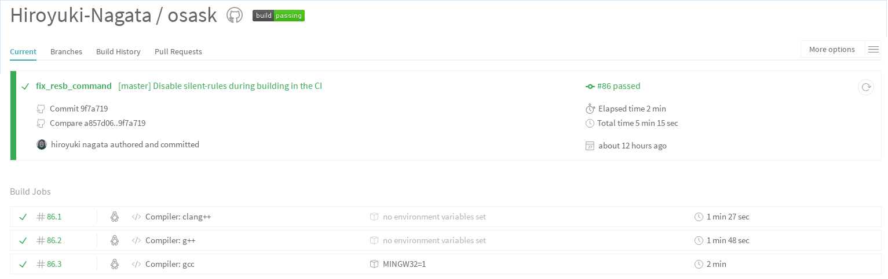

１７−２０日目 - naskがLinuxで動いた 2016/4/6-8, 10
naskがLinuxで動いた
DBコマンドを使うと吐き出されるバイナリが２倍になるバグが残ってましたが直しました
具体的には以下のような単純なアセンブラコードの評価をやってます
; test for DB DB 0xeb, 0x4e, 0x90, 0x48, 0x45, 0x4c, 0x4c, 0x4f
main(): nask argc: 3, argv:{./nask, data/01_nasfile.nas, data/01_nasfile.img, }
before_nask_process(): GOLD_getsize(file): 64
before_nask_process(): call nask...
nask(): nask assembly source ===
; test for DB
DB 0xeb, 0x4e, 0x90, 0x48, 0x45, 0x4c, 0x4c, 0x4f
===
nask(): processing assembly source: because of 'src0 < src1'
nask(): buffered pointer bp: c5eb88e8
decoder(): in
decoder(): *src == ';': semi-colon is used for comments
put4b(): returned p[0-3]: 0x0f, 0x00, 0x00, 0x00
put4b(): returned p[0-3]: 0x3b, 0x00, 0x00, 0x00
nask(): processing assembly source: because of 'src0 < src1'
nask(): buffered pointer bp: c5eb88e8
decoder(): in
decoder(): research: normal format assembly
decoder(): found mnemonic! opcode: DB
decoder(): found mnemonic! param: 0x48
decoder(): found mnemonic! param: 0x01
decoder(): found mnemonic! param: 0x9e
decoder(): itp's first parameter: 0x48
put4b(): returned p[0-3]: 0x31, 0x00, 0x00, 0x00
put4b(): returned p[0-3]: 0x44, 0x00, 0x00, 0x00
nask(): itp-param: OPE_DB
nask(): [OPE_DB] c: 0x30
nask(): *dest0: 0x00
nask(): [OPE_DB] c: 0x30
nask(): *dest0: 0x00
nask(): [OPE_DB] c: 0x30
nask(): *dest0: 0x00
nask(): [OPE_DB] c: 0x30
nask(): *dest0: 0x00
nask(): [OPE_DB] c: 0x30
nask(): *dest0: 0x00
nask(): [OPE_DB] c: 0x30
nask(): *dest0: 0x00
nask(): [OPE_DB] c: 0x30
nask(): *dest0: 0x00
nask(): [OPE_DB] c: 0x30
nask(): *dest0: 0x00
put4b(): returned p[0-3]: 0x00, 0x00, 0x00, 0x00
put4b(): returned p[0-3]: 0x00, 0x00, 0x00, 0x00
nask(): dest0: (null)
before_nask_process(): nask loaded src: [ 0x3b, 0x20, 0x74, 0x65, 0x73, 0x74, 0x20, 0x66, 0x6f, 0x72, 0x20, 0x44, 0x42, 0x0d, 0x0a, 0x44, 0x42, 0x20, 0x30, 0x78, 0x65, 0x62, 0x2c, 0x20, 0x30, 0x78, 0x34, 0x65, 0x2c, 0x20, 0x30, 0x78, 0x39, 0x30, 0x2c, 0x20, 0x30, 0x78, 0x34, 0x38, 0x2c, 0x20, 0x30, 0x78, 0x34, 0x35, 0x2c, 0x20, 0x30, 0x78, 0x34, 0x63, 0x2c, 0x20, 0x30, 0x78, 0x34, 0x63, 0x2c, 0x20, 0x30, 0x78, 0x34, 0x66, 0xf1, ]
before_nask_process(): call LL...
LL(): sebsect++ !
before_nask_process(): LL loaded tmp0: [ 0xe0, 0xf7, 0x31, ]
before_nask_process(): call output...
before_nask_process(): output loaded dest0: [ ]
check_alignments(): srcp: 0xe0
check_alignments(): srcp: 0xf7
check_alignments(): srcp: 0xe0
check_alignments(): srcp: 0x31
check_alignments(): srcp: 0x31
check_alignments(): srcp: 0x31
check_alignments(): srcp: 0x31
check_alignments(): srcp: 0x31
check_alignments(): srcp: 0x31
check_alignments(): srcp: 0x31
check_alignments(): srcp: 0x31
check_alignments(): srcp: 0xf7
check_alignments(): srcp: 0xf2
check_alignments(): srcp[0] matched REM_4B
check_alignments(): srcp[1]: 0
check_alignments(): srcp[1]: set section align
check_alignments(): srcp: 0xf2
check_alignments(): srcp[0] matched REM_4B
check_alignments(): srcp[1]: 1
check_alignments(): srcp[1]: set section flags
check_alignments(): srcp: 0xf1
check_alignments(): srcp[0] matched REM_3B
check_alignments(): srcp[2]: set format
check_alignments(): srcp: 0xf6
check_alignments(): srcp[0] matched REM_8B
check_alignments(): srcp[1]: file
before_nask_process(): output modified dest0: [ 0xeb, 0x4e, 0x90, 0x48, 0x45, 0x4c, 0x4c, 0x4f, ]
before_nask_process(): output generated dest1: [ ]
nask_main(): nask GOL_retcode: 001_nasfile.img: 完了
00000000: eb4e 9048 454c 4c4f .N.HELLO
naskの内部構造
ここでnaskの内部構造を解説しておこう
naskはアセンブラソースを４つのデータにして処理する。それぞれ、src, tmp, dest, listという名前になっている。 それぞれ全てがUCHARのポインタであり、先頭ポインタがsrc0のような形で示される。
役割
naskのhelp内に出てくる用語と以下の命名は一致する
usage : >nask source [object/binary] [list]
- src : 元のアセンブラソース
- tmp : オペコードの解釈などを含む中間コード
- dest: 出力されるバイナリ
- list: nask内部での解析結果をデバッグ出力
各区間の処理は以下の関数で決定される
- src0〜src1: nask関数
- tmp0〜tmp1: LL関数
- dest0〜dest1: output関数
int before_nask_process(int argc, UCHAR **argv, UCHAR *src0)
{
UCHAR *src1, *dest0, *dest1;
UCHAR *tmp0, *tmp1, *list0, *list1;
int len;
int nask_errors = 0;
// (1) ここの定義
tmp0 = src0 + MAX_SRCSIZ; // tmp0 は src0から (2 * 1024 * 1024) byte 先
dest0 = tmp0 + MAX_TMPSIZ; // dest0 は tmp0 から (4 * 1024 * 1024) byte先
list0 = dest0 + MAX_BINSIZ; // list0 は dest0 から (2 * 1024 * 1024) 先
...
// (2) ここの定義
src1 = src0 + len; // lenは nasファイルのサイズ
}
・(1) を図にすると
[----- 2MB -----] [----- 4MB -----] [----- 2MB -----]
^ ^ ^ ^
src0 tmp0 dest0 list0
・(2) を図にすると
[----- 2MB -----] [----- 4MB -----] [----- 2MB -----]
^ ^ ^ ^ ^
src0 src1 tmp0 dest0 list0
・あとは、tmp、listも同様にして処理を行う
[----- 2MB -----] [----- 4MB -----] [----- 2MB -----]
^ ^ ^ ^ ^
src0---src1 tmp0---tmp1 dest0---dest1 list0
naskのクロスコンパイル開始
Autotoolsを使うと、OS依存のあるもの以外は比較的簡単にWindowsビルドが作れるので早速始めた。
MinGWのある環境で以下のようなスクリプトでビルドを通せば、Linux上でWindowsのバイナリが作れます。
#!/bin/bash # # script for cross compile i686-w64-mingw32 # ./bootstrap ./configure --prefix=/usr/i686-w64-mingw32 \ --build=x86_64-unknown-linux-gnu \ --host=i686-w64-mingw32 \ --target=i686-w64-mingw32 \ --disable-silent-rules make